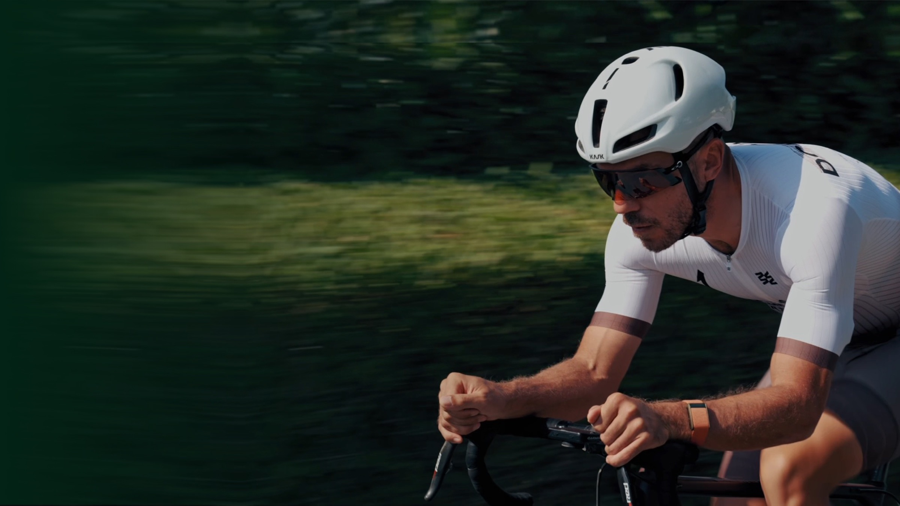
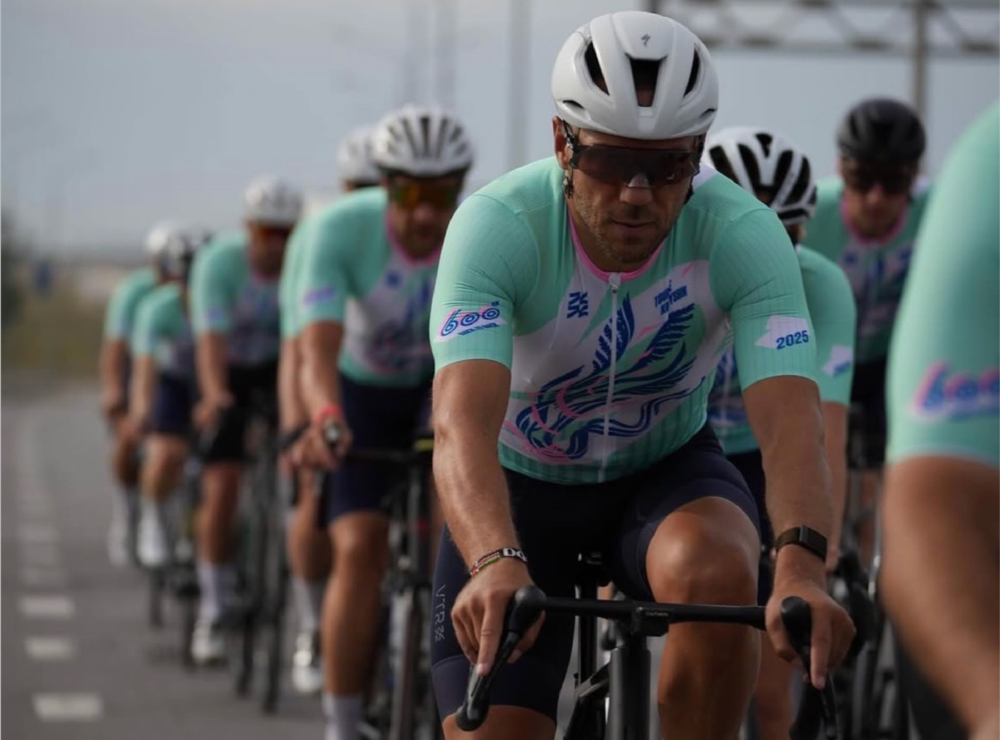

100 км
плавания
- 2 000 бассейнов по 50 метров
- три переправы через Ла-Манш
- от Москвы до Ярославля без передышки в воде

Первый в мире 31-дневный ультратриатлон.
Цель проекта
11 111 км — не авантюра, а новый масштаб уже работающей формулы: предельная дистанция, честный герой и история, за которой хочется следить до конца.
Один проект · три дисциплины
31 день подряд. Числа здесь не декор — каждое можно перевести в знакомый человеку масштаб.
100 км
10 010 км
1 001 км

Не продаёт историю. Он её проживает.
Кто такой Виктор
47 лет. Не создаёт образ — живёт в нём.
Идеолог сообществ «Пыльные гантели» и «Гастродинамика», друг, мотиватор и один из сильнейших любителей в триатлоне.



Мы уже делали это
Аудитория готова к длинным форматам. Честность работает лучше глянца. История продолжает жить после финиша.
Смотреть фильм о проекте «1111» Откроется ВКонтакте в новой вкладкеНе первый предел
Партнёрам
Давайте создадим это вместе.
Подберём формат присутствия бренда в большой человеческой истории — без искусственного глянца и случайных интеграций.
Контакты
Анна Нестерова Написать по почте Написать в Telegram